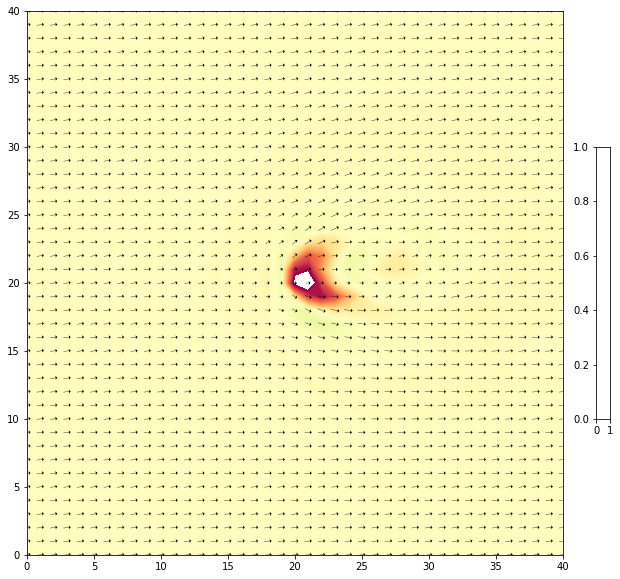

9. Basic Interactive Plot Example¶
Requires wrf-python and ipywidgets
%matplotlib inline
import matplotlib.pyplot as plt
import numpy as np
from datetime import datetime
from netCDF4 import Dataset
from wrf import getvar, interplevel, ALL_TIMES
from ipywidgets import interactive
# Open a netCDF data file using xarray default engine and load the data into xarrays
path = '/expanse/lustre/projects/uic406/snesbitt/em_quarter_ss/mp10/'
ncfile = Dataset('wrfout_d01_0001-01-01_00:00:00')
# Extract slices of lon and lat
# Read in data from netCDF file.
# Note that when we extract ``u`` and ``v`` from the file,
# Extract the Geopotential Height and wind fields
z = getvar(ncfile, "z", timeidx = ALL_TIMES)
ua = getvar(ncfile, "ua", timeidx = ALL_TIMES)
va = getvar(ncfile, "va", timeidx = ALL_TIMES)
wa = getvar(ncfile, "wa", timeidx = ALL_TIMES)
---------------------------------------------------------------------------
FileNotFoundError Traceback (most recent call last)
<ipython-input-2-f1733b34e037> in <module>
3 path = '/expanse/lustre/projects/uic406/snesbitt/em_quarter_ss/mp10/'
4
----> 5 ncfile = Dataset('wrfout_d01_0001-01-01_00:00:00')
6
7 # Extract slices of lon and lat
netCDF4/_netCDF4.pyx in netCDF4._netCDF4.Dataset.__init__()
netCDF4/_netCDF4.pyx in netCDF4._netCDF4._ensure_nc_success()
FileNotFoundError: [Errno 2] No such file or directory: b'wrfout_d01_0001-01-01_00:00:00'
def plot_interact(tindex, level):
ua_interp = interplevel(ua, z, level)
va_interp = interplevel(va, z, level)
wa_interp = interplevel(wa, z, level)
fig1, ax1 = plt.subplots(figsize=(12, 10))
cb = ax1.contourf(z['west_east'].values,
z['south_north'].values,
wa_interp.isel(Time=tindex).values,levels=np.arange(-30,30,0.5),cmap='Spectral_r')
Q = ax1.quiver(z['west_east'].values,
z['south_north'].values,
ua_interp.isel(Time=tindex).values,
va_interp.isel(Time=tindex).values,pivot='middle',color='black',
units='width',width=0.0007,headwidth=10)
qk = ax1.quiverkey(Q, 0.92, .95, 5, r'$5 \frac{m}{s}$', labelpos='E',
coordinates='figure')
cb = plt.colorbar(cb, shrink=0.5, title='Vertical wind (m/s)')
ax1.set_title('Vertical motion (m/s) and winds (m/s) at time='+str(tindex)+' and level='+str(level))
plt.tight_layout()
plt.show()
interactive_plot = interactive(plot_interact, tindex=(0, 13), level=(0, 20000, 500))
output = interactive_plot.children[-1]
output.layout.height = '500px'
interactive_plot

plt.quiver(x,ua_interp.values, va_interp.values)
---------------------------------------------------------------------------
ValueError Traceback (most recent call last)
<ipython-input-34-aa70d6a631e3> in <module>
----> 1 plt.quiver(np.arange(40),np.arange(40),ua_interp.values, va_interp.values)
~/miniforge3/envs/py3/lib/python3.8/site-packages/matplotlib/pyplot.py in quiver(data, *args, **kw)
2869 @_copy_docstring_and_deprecators(Axes.quiver)
2870 def quiver(*args, data=None, **kw):
-> 2871 __ret = gca().quiver(
2872 *args, **({"data": data} if data is not None else {}), **kw)
2873 sci(__ret)
~/miniforge3/envs/py3/lib/python3.8/site-packages/matplotlib/__init__.py in inner(ax, data, *args, **kwargs)
1445 def inner(ax, *args, data=None, **kwargs):
1446 if data is None:
-> 1447 return func(ax, *map(sanitize_sequence, args), **kwargs)
1448
1449 bound = new_sig.bind(ax, *args, **kwargs)
~/miniforge3/envs/py3/lib/python3.8/site-packages/matplotlib/axes/_axes.py in quiver(self, *args, **kw)
5019 args = self._quiver_units(args, kw)
5020
-> 5021 q = mquiver.Quiver(self, *args, **kw)
5022
5023 self.add_collection(q, autolim=True)
~/miniforge3/envs/py3/lib/python3.8/site-packages/matplotlib/quiver.py in __init__(self, ax, scale, headwidth, headlength, headaxislength, minshaft, minlength, units, scale_units, angles, width, color, pivot, *args, **kw)
501 **kw)
502 self.polykw = kw
--> 503 self.set_UVC(U, V, C)
504 self._initialized = False
505
~/miniforge3/envs/py3/lib/python3.8/site-packages/matplotlib/quiver.py in set_UVC(self, U, V, C)
574 for name, var in zip(('U', 'V', 'C'), (U, V, C)):
575 if not (var is None or var.size == self.N or var.size == 1):
--> 576 raise ValueError(f'Argument {name} has a size {var.size}'
577 f' which does not match {self.N},'
578 ' the number of arrow positions')
ValueError: Argument U has a size 1681 which does not match 40, the number of arrow positions
x,y = np.meshgrid(z.west_east.values,z.south_north.values)
x
array([[ 0, 1, 2, ..., 38, 39, 40],
[ 0, 1, 2, ..., 38, 39, 40],
[ 0, 1, 2, ..., 38, 39, 40],
...,
[ 0, 1, 2, ..., 38, 39, 40],
[ 0, 1, 2, ..., 38, 39, 40],
[ 0, 1, 2, ..., 38, 39, 40]])
y
array([[ 0, 0, 0, ..., 0, 0, 0],
[ 1, 1, 1, ..., 1, 1, 1],
[ 2, 2, 2, ..., 2, 2, 2],
...,
[38, 38, 38, ..., 38, 38, 38],
[39, 39, 39, ..., 39, 39, 39],
[40, 40, 40, ..., 40, 40, 40]])